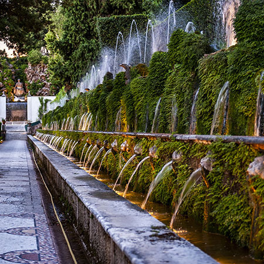
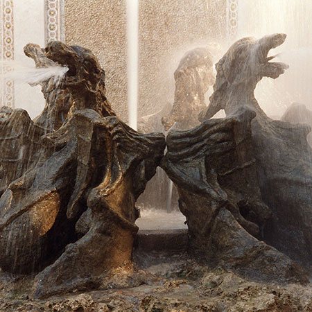

Curiosità
il viale delle cento fontane
Le Cento Fontane di Tivoli sono una delle parti più suggestive della Villa. Il Viale delle Cento Fontane è una lunga via che collega la Fontana dell’Ovato alla Rometta, un’altra bellissima fontana. L’intero viale conta circa cento fontane, sviluppate in tre piani, formate da gigli, aquile e obelischi, simboleggianti la casata estense e racconta allegoricamente il corso dei tre fiumi che sorgono dai monti tiburtini, Albuneo, Aniene ed Ercolaneo rappresentati dai tre piani delle fontane che sfociano nel fiume Tevere (simboleggiata dalla fontana Rometta). L’intero viale è pavimentato con pregiati marmi antichi in stile antico romano. A metà del viale c’è una un grande balcone dalla quale si può ammirare la fontana dei Draghi, accessibile direttamente da una scalinata circolare.


lo sai che...
Le fontane non sono alimentate da congegni meccanici ma, semplicemente, sfruttando la pressione naturale dell’acqua del Fiume Aniene, convogliata nella Villa grazie a lavori idraulici. L'impresa di Ligorio fu davvero notevole infatti, le acque del fiume furono convogliate in una galleria di 600 metri che portava molta acqua fino alla vasca sopra la Fontana dell'Ovato. Calcolò quanta acqua ci sarebbe voluta per realizzare tutti i giochi d'acqua usando solo il principio dei vasi comunicanti, senza l'impiego di una forza motrice.
La Villa viene ancora oggi rifornita attraverso questo canale,
portando ogni giorno alle fontane 300 litri d'acqua.